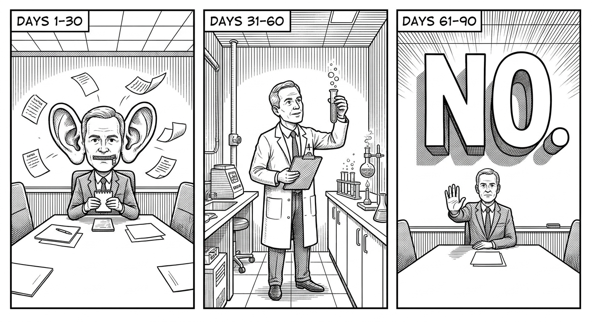

Chapitre 9 Annexe : lire la salle en 2026
Ce livre expirera avant sa prochaine édition. Les outils changent. Le jargon change. Le rapport de force entre PM et ingénieurs bougera encore à mesure que l'IA bougera encore. Une partie de ces pages sera datée d'ici deux ans.
L'annexe est pour ce qui date moins : comment savoir si une équipe fait réellement du travail de PM, comment aborder l'entretien des deux côtés, et comment survivre aux quatre-vingt-dix premiers jours. C'est intemporel au sens où les dynamiques sous-jacentes — qui décide, qui sait, qui porte la responsabilité — sont des traits structurels du fonctionnement des équipes produit, pas les artefacts d'une époque.
Servez-vous-en avant d'accepter un poste. Après en avoir quitté un. Comme antisèche quand vous vous apprêtez à dire en entretien quelque chose qui sonne juste mais pourrait être faux.
9.1 Décodeur de buzzwords : édition 2026
Les PM parlent en code. La moitié est un raccourci utile. L'autre moitié est du déni. Voici comment traduire — avec les définitions honnêtes, pas la version marketing.
| Ils disent | Ce que cela veut souvent dire | Quoi demander | Alerte rouge si |
|---|---|---|---|
| « AI-native » | Nous avons ajouté un chatbot à la page de réglages. | Quelle décision le modèle prend-il sans humain dans la boucle ? | La réponse est « il résume du contenu ». |
| « Agentique » | Nous avons mis un modèle dans une boucle while et appelé cela un produit. | Que se passe-t-il quand il se trompe ? Qui est réveillé à 2 heures du matin ? | « Nous n'avons pas complètement réfléchi à cela. » |
| « 0 to 1 » | Nous n'avons pas d'utilisateurs et la définition du succès est floue. | Que vous ont dit les zéro utilisateurs ? Qu'est-ce qui compte comme « 1 » ? | La réponse est « nous sommes pré-PMF », sans détails. |
| « Plateforme » | Nous avons trois fonctionnalités et l'espoir que d'autres construiront dessus. | Qui construit dessus aujourd'hui, en dehors de vos propres équipes ? | « Nous construisons dans cette direction. » |
| « Flywheel » | Nous avons dessiné un cercle sur un tableau blanc. | Décrivez-moi la métrique d'entrée précise et la mécanique de la boucle. | La réponse invoque des « effets de réseau » sans mécanisme. |
| « Obsédés par le client » | Nous avons fait deux entretiens utilisateurs le trimestre dernier. | Qu'avez-vous appris qui a changé une décision de roadmap ? | « Les utilisateurs adorent ce que nous construisons. » |
| « Piloté par la donnée » | Nous avons un tableau de bord qui se met à jour tout seul. | Quelle décision la donnée a-t-elle changée ces soixante derniers jours ? | « Nous le surveillons de près. » |
| « Founder mode » | Pas de processus, pas de responsabilité, le fondateur décide de tout, y compris de vos vacances. | Qui dit non au fondateur, et à quand remonte la dernière fois ? | « Le fondateur a vraiment des standards très élevés. » |
| « De l'influence sans autorité » | Personne ne vous écoute, et c'est présenté comme une opportunité de développement. | Qui est licencié si ce produit échoue ? | « C'est un résultat d'équipe. » |
| « PM full-stack » | Nous avons besoin que vous fassiez aussi le design, la data et un peu d'ingénierie légère. | Qu'est-ce qui est dépriorisé quand le travail de PM s'étend ? | « Nous sommes frugaux, tout le monde porte plusieurs casquettes. » |
| « Player-coach » | Vous managez deux personnes et possédez aussi une surface produit entière. | Quel rôle prime quand les deux entrent en conflit ? | « Nous vous faisons confiance pour gérer cela. » |
| « Levier » | J'assiste à beaucoup de réunions. | Qu'avez-vous livré le trimestre dernier qui tourne encore sans vous ? | La réponse est « la roadmap ». |
| « Post-mortem sans blâme » | Nous ne disons pas tout haut à qui la faute. | Qu'est-ce qui a précisément changé après le dernier post-mortem ? | « Nous créons de la sécurité psychologique. » (mais rien n'a changé) |
| « Ownership » | Vous êtes responsable de choses que vous ne contrôlez pas. | Qu'est-ce qui est dans le périmètre, et hors périmètre ? Qui possède les surfaces adjacentes ? | Ils ne savent pas nommer les frontières. |
| « Move fast » | Nous livrons souvent. Nous ne savons pas forcément si ce que nous livrons fonctionne. | Quelle est votre cadence de revue d'expérimentations ? Combien de temps avant de lire les résultats ? | « On livre et on voit ce qui se passe. » |
Règle : si vous ne pouvez pas le dessiner sur un coin de serviette, ce n'est pas réel. S'ils ne savent pas répondre à « qui est réveillé quand ça casse », ce n'est pas réel. Si la réponse à chaque question est « l'IA », partez.
9.2 Les questions d'entretien à leur poser
L'entretien va dans les deux sens. Ils testent si vous savez faire le métier. Vous testez si le métier existe — s'il se fait là un vrai travail de PM, et pas de la coordination de projet affublée d'un titre de PM.
Ces questions sont conçues pour révéler la réponse sans être hostiles. La plupart des interlocuteurs y répondront honnêtement si elles sont posées avec une curiosité sincère plutôt qu'une énergie de piège.
« Racontez-moi une décision prise par l'équipe le mois dernier. Quelle était l'alternative ? Qui était en désaccord ? »
Pourquoi cela fonctionne : les PM vivent dans les décisions. Si l'interlocuteur ne peut pas nommer une décision récente précise, avec une alternative nommée et un désaccord nommé, soit il n'y a pas de travail de PM, soit le PM n'est pas honnête sur les dynamiques. Une décision sans alternatives n'est pas une décision — c'est une annonce. Une décision sans désaccord n'est pas une décision — c'est du théâtre de consensus.
Bon signe : « Nous allions construire X. L'ingénierie a résisté à cause d'une contrainte de plateforme que nous n'avions pas anticipée. Nous sommes passés à Y après une semaine de débat. Voici le doc que j'ai écrit pour plaider le dossier. »
Alerte rouge : « Nous sommes pilotés par la donnée, donc la donnée nous a menés à la décision. » La donnée n'a pas de badge. Quelqu'un a tranché. L'incapacité ou le refus de nommer cette personne signale une responsabilité diffuse — ce qui veut généralement dire qu'elle est portée en silence par la personne la plus junior.
« Qu'est-ce qui a été tué le trimestre dernier ? Qui l'a tué ? Comment ? »
Pourquoi cela fonctionne : livrer est facile. Tuer est difficile. Les équipes qui ne savent pas tuer accumulent la dette technique, la confusion des utilisateurs et la charge de maintenance. Si la réponse honnête est « rien n'a été tué », vous regardez une équipe soit au jugement parfait (improbable), soit incapable de dire non (courant).
Bon signe : « C'est moi qui l'ai tué. Voici la note que j'ai envoyée pour expliquer pourquoi. Voici qui était mécontent. Voici où nous avons fini par atterrir. » Points bonus s'ils mentionnent ce qu'est devenue la chose tuée — a-t-elle refait surface ? Ont-ils appris des données ?
Alerte rouge : « Nous ne tuons pas vraiment — nous déprioritisons. » C'est comme cela qu'on finit avec quarante fonctionnalités, dont sept cassées, six que personne n'utilise, et une que le CEO cite à l'all-hands parce qu'un client lui a dit l'adorer.
« Montrez-moi le dernier post-mortem. Qu'est-ce qui a changé grâce à lui ? »
Pourquoi cela fonctionne : les équipes sans post-mortems n'apprennent pas. Les équipes aux post-mortems qui ne changent rien jouent le processus au lieu de s'en servir. La question de ce qui a précisément changé — pas de ce qui a été identifié : de ce qui a changé — teste si la boucle d'apprentissage de l'équipe est réelle.
Bon signe : « Nous nous trompions sur l'hypothèse d'activation. Nous avons donc changé notre mesure de l'onboarding — du taux de complétion au taux d'actifs à trente jours — et restructuré l'expérience des nouveaux utilisateurs d'après ce que montraient les cohortes. »
Alerte rouge : « Nous faisons des post-mortems sans blâme. Nous nous concentrons sur les systèmes, pas les individus. » Ce cadrage, appliqué uniformément, empêche l'équipe d'identifier jamais la chose précise qui a mal tourné et la personne précise chargée de la changer. Responsabilité et blâme sont deux choses différentes. L'absence de blâme n'exige pas l'absence de responsabilité.
« Si je vous rejoins, à quoi est-ce que je dis non dès le premier mois ? »
Pourquoi cela fonctionne : un poste de PM au périmètre indéfini est un poste où vous passerez les trois premiers mois en négociations territoriales qui vous épuiseront avant d'avoir rien construit. S'ils ne peuvent pas nommer ce qui est hors périmètre, soit le rôle est tout (intenable), soit ils n'y ont pas réfléchi (un problème de management).
Bon signe : « Vous diriez non immédiatement à ces trois catégories de demandes. Elles viennent des Sales et elles sont bruyantes. Voici notre réponse actuelle et pourquoi. »
Alerte rouge : « Vous découvrirez le périmètre au fil de l'eau. » Traduction : personne ne possède ceci, et vous hériterez d'un différend territorial avant la fin de votre période d'essai.
« Qui sera frustré par moi dans quatre-vingt-dix jours, et pourquoi ? »
Pourquoi cela fonctionne : le métier de PM côtoie le conflit. La personne qui le fait bien décevra du monde — en disant non, en tranchant des décisions qui coûtent quelque chose à quelqu'un, en tenant une position sous pression. Si la réponse est « personne », l'interlocuteur ment sur la nature du rôle, ou décrit un rôle où personne ne se soucie de ce que vous faites.
Bon signe : « Les Sales résisteront parce que nous ne construisons pas leurs trois principales demandes. Voici notre cadre pour cette conversation et ce que nous attendons du PM qui la mène. » Cela vous dit que le conflit est compris, attendu, et doté d'un processus.
Alerte rouge : « Nous sommes vraiment alignés ici. » Personne n'est jamais entièrement aligné. Ce qu'ils veulent dire : le conflit est pour l'instant tu, ou la personne qui posait les questions difficiles vient de partir.
9.3 Les questions qu'ils vous poseront — et comment les penser
Les questions comportementales se préparent facilement désormais. L'IA rédige une réponse STAR pour n'importe quelle question comportementale en quatre-vingt-dix secondes. Les recruteurs le savent. Les questions qui comptent en 2026 exigent une pensée en temps réel qui ne se prépare pas d'avance.
« Voici notre produit. Vous avez une heure. Que changeriez-vous, et pourquoi ? »
Ce qu'ils testent réellement : votre capacité à identifier un vrai problème (pas une préférence esthétique) et à le prioriser vite, sans framework auquel vous raccrocher. La réponse gorgée de frameworks — « d'abord j'identifierais l'utilisateur, puis les jobs to be done, puis je prioriserais contre les OKR » — est celle qui dit que vous avez lu des livres de PM. Pas celle qui dit que vous avez fait du travail de PM.
Comment l'aborder : utilisez d'abord le produit. Vraiment. Ne parlez pas tout de suite. Dites : « Je vais réellement l'utiliser dix minutes avant de répondre. » Puis remarquez ce qui vous frustre, ce qui vous perd, ce que vous vous attendiez à trouver et n'avez pas trouvé. La meilleure réponse vient en général d'un vrai moment de friction, pas d'un framework plaqué de l'extérieur.
À quoi ressemble une réponse forte : « J'ai essayé de faire X et je n'ai pas pu. Côté données — combien d'utilisateurs essaient de faire X et abandonnent —, je parierais que c'est dans le trio de tête des points d'abandon. Voici le changement le plus simple que je ferais pour tester si c'est bien la friction, et voici ce que je mesurerais dans trente jours. »
« Variante A contre variante B. A gagne de 2 %. On livre ? »
Ce qu'ils testent : la littératie statistique, le raisonnement en coût du délai, la conscience du coût d'opportunité. « On livre » est toujours la mauvaise réponse. « Ça dépend » est la bonne — mais seulement si vous savez dire de quoi cela dépend précisément, pas génériquement.
De quoi cela dépend réellement : les 2 % sont-ils statistiquement significatifs à votre taille d'échantillon ? Quel est l'intervalle de confiance ? Que disent les métriques garde-fous — autre chose a-t-il bougé quand A a surpassé B ? Que coûte l'attente de données supplémentaires, contre le coût de livrer quelque chose de faux ? Et 2 % sur cette métrique est-il ce qui compte vraiment pour le résultat business visé ?
À quoi ressemble une réponse forte : « Je voudrais d'abord l'intervalle de confiance. Si c'est 2 % ± 3 %, c'est du bruit et on ne livre pas. Si c'est 2 % ± 0,5 %, c'est réel. Puis je vérifierais les garde-fous — la rétention, le volume de support, les métriques adjacentes ? Si c'est propre, je livre et je m'engage à lire les données une semaine après le lancement avant de déclarer victoire. »
« Le CEO veut cette fonctionnalité. La donnée dit qu'elle ne marchera pas. L'ingénierie dit que c'est possible. Que faites-vous ? »
Ce qu'ils testent : la navigation du conflit sous un vrai gradient d'autorité. Il n'y a pas de réponse propre, parce que la situation n'en a pas. Les mauvaises réponses sont claires : « faire ce que dit le CEO » (aucun jugement) et « bloquer parce que la donnée dit non » (aucune réalité politique).
À quoi ressemble une réponse forte : « J'écrirais le one-pager qui plaide le dossier des données — l'hypothèse précise que la donnée conteste et ce qu'il me faudrait voir pour changer d'avis. Je le partagerais avec le CEO avant que la décision ne soit publique — pas comme un veto : comme l'information dont il a besoin pour trancher en connaissance de cause. S'il veut quand même avancer, je proposerais la version la plus petite possible qui teste définitivement l'hypothèse en trente jours. Puis j'assumerais le résultat dans les deux cas — et je documenterais ce que nous avons appris, quelle que soit l'issue. »
La clé, c'est « assumer le résultat dans les deux cas ». Vous n'essayez pas d'empêcher le CEO de décider. Vous essayez de garantir que la décision se prend avec l'information disponible, et que l'équipe en apprend quelque chose quelle que soit l'issue.
« Utilisez l'IA pour critiquer quelque chose que vous avez construit ou écrit. Racontez-moi ce qu'elle a dit et ce que vous en avez fait. »
Ce qu'ils testent : si vous savez utiliser l'outil, encaisser le désaccord d'un modèle sans le balayer ni capituler, et rester calibré sur les cas où le jugement du modèle prime sur le vôtre et réciproquement. C'est la version 2026 de « montrez-moi comment vous gérez le feedback ».
Comment échouer : « L'IA se trompait. » Point final. Cela dit au recruteur que vous ne savez pas utiliser l'outil de façon critique. L'IA se trompe parfois. Ce qui compte, c'est de savoir expliquer précisément en quoi elle se trompait et pourquoi votre jugement prime dans ce cas précis.
Comment réussir : « J'ai passé ma spec dans Claude et il a signalé trois choses. Les deux premières étaient légitimes — je n'avais pas pensé à l'état vide, et le message d'erreur était flou. J'ai corrigé les deux. La troisième était une suggestion d'ajouter une section de paysage concurrentiel, que j'ai refusée — la spec visait un public interne qui n'a pas besoin de mise en contexte. Je l'ai laissée de côté en notant pourquoi. »
« Que devrions-nous ne pas construire ? »
Ce qu'ils testent : le goût, et la volonté de dire quelque chose de négatif sans le diluer jusqu'au néant. Le jugement sur ce qui est faux, pas seulement sur ce qui est juste. La question récompense la spécificité et pénalise aussi bien la prudence excessive (« il me faudrait plus de données avant de me prononcer ») que l'audace excessive (« toute la fonctionnalité X est une erreur »).
Une réponse forte : nommez une chose précise avec une raison précise. « Je serais prudent sur [la fonctionnalité X] — le cas d'usage qu'elle vise, vos utilisateurs ont déjà un contournement, et en ajouter une version native pourrait en réalité ralentir l'adoption du motif existant. Je voudrais voir les données sur la prévalence du contournement avant d'investir là. » Ça, c'est un point de vue. Le recruteur peut être d'accord ou non. Les deux conversations ont de la valeur.
9.4 Le 30-60-90 de votre premier poste de PM
Vous avez le poste. Le vrai travail commence. Voici un cadre pour les quatre-vingt-dix premiers jours qui privilégie l'apprentissage sur la démonstration — et qui explique pourquoi cet ordre compte.
L'ordre compte parce que la confiance précède l'influence. Le nouveau PM qui propose des choses en deuxième semaine sans contexte est contourné en silence, pas corrigé. La fenêtre pour apprendre sans paraître incompétent est courte. Servez-vous-en.

Les 30 premiers jours : comprendre avant de proposer
L'erreur la plus courante des nouveaux PM : proposer des choses dès le premier mois. Non. Vous n'avez pas encore le contexte. Vous avez la reconnaissance de motifs venue de vos expériences précédentes — précieuse —, mais pas la connaissance institutionnelle spécifique — le tissu cicatriciel, les expérimentations échouées, les décisions prises pour des raisons documentées nulle part — qui transforme la reconnaissance de motifs en bon jugement.
Quoi faire à la place :
Cartographiez la vraie structure de décision. L'organigramme vous dit qui rend compte à qui. La vraie question : qui décide réellement. Passez les deux premières semaines à assister à autant de réunions différentes qu'on vous y autorise, et observez qui parle en dernier et quels commentaires changent la direction. Cette personne est le vrai décideur du sujet de la réunion, quel que soit son titre.
Apprenez ce qui a déjà été tenté. Avant de proposer quoi que ce soit, demandez : « Quelqu'un a-t-il déjà essayé ? » Si oui, lisez le doc. S'il n'y a pas de doc, demandez à la personne qui sait. Le moyen le plus rapide de perdre la confiance dans un nouveau poste de PM : proposer une chose qui a échoué l'an dernier sans savoir qu'elle a échoué l'an dernier.
Tuez quelque chose de petit. Un tableau de bord mort. Une fonctionnalité zombie. Une réunion récurrente sans production claire. Pas comme démonstration de pouvoir — comme un service. Demandez « est-ce encore utile ? » et soyez prêt à fermer la boucle si la réponse est non. Cela vous en apprend plus sur la tolérance au changement de l'équipe que n'importe quel document d'onboarding, et cela signale que vous êtes orienté vers l'utilité plutôt que l'expansion.
Écrivez trois teardowns, en privé. Pour vous. Ce qui est cassé dans le produit, pour qui, et ce que vous mesureriez. Ne les partagez pas encore. Vous vous calibrez, vous ne performez pas. En partageant trop tôt, vous devenez comptable d'opinions que vous n'avez pas encore assez de contexte pour défendre.
Les 60 premiers jours : gagner la confiance par la livraison
Trouvez ce que l'ingénierie voulait sans pouvoir le prioriser, ou la maquette du design que personne n'a planifiée. Dégagez la voie jusqu'à la livraison. Obtenez une victoire qui n'est pas la vôtre — une victoire pour un coéquipier qui attendait. Ce genre de victoire précoce bâtit plus de confiance qu'un brillant document de stratégie, parce qu'elle démontre que vous êtes quelqu'un qui rend réelles les bonnes idées des autres, pas quelqu'un qui les remplace par les siennes.
Puis partagez l'un de vos teardowns. Pas les trois — un. Avec la personne capable de s'y engager honnêtement et de vous aider à calibrer votre lecture du produit. Sa réponse vous en dira plus sur la culture de l'équipe que n'importe quel document d'onboarding.
Dans cette phase aussi : commencez votre propre carte des parties prenantes. Pas la formelle — la réelle. Qui doit être dans la pièce pour qu'une décision tienne ? Qui a un veto informel qui n'apparaît dans aucun circuit d'approbation ? Quelles sont les deux ou trois personnes dont l'avis pèse le plus sur le jugement de l'équipe, même si ce ne sont pas les plus seniors du bâtiment ?
Les 90 premiers jours : dire non à quelque chose de significatif
Avec un document. Avec un raisonnement. Dans un contexte où la personne à qui vous dites non attendait un oui.
C'est le test : opérez-vous en PM, ou en preneur de notes bien organisé ? Les preneurs de notes synthétisent et communiquent. Les PM tranchent. Le premier « non » significatif que vous délivrez — celui qui tient sous la contestation, que vous savez défendre dans une salle où votre manager est présent, que vous savez écrire assez clairement pour qu'un lecteur dans six mois comprenne pourquoi la décision a été prise — est le moment où vous devenez un vrai PM dans cette organisation.
Si vous ne trouvez pas, d'ici au jour quatre-vingt-dix, de décision exigeant un vrai « non », demandez le périmètre qui en rend un possible. Cela peut vouloir dire demander moins de périmètre temporairement, pour faire une chose avec une vraie conviction plutôt que dix avec déférence. Un périmètre qui n'exige pas de tenir une position n'est pas un périmètre de PM.
9.5 Une liste de lecture — édition honnête
Voici des livres qui valent d'être lus, avec une évaluation honnête de ce à quoi ils servent réellement, par opposition à l'usage qu'on en fait couramment.
Inspired de Marty Cagan — Le texte canonique du PM. Utile pour comprendre la structure des équipes produit dans les entreprises tech et l'argument en faveur de PM investis de pouvoir plutôt que simples exécutants d'une roadmap descendue d'en haut. Moins utile pour comprendre la réalité politique de la plupart des entreprises, qui ne fonctionnent pas comme Cagan le décrit et ne deviendront pas des Empowered Product Organizations parce que vous avez lu le livre. Lisez-le pour le vocabulaire et l'aspiration. Ne le lisez pas comme la description de l'endroit où vous travaillerez probablement.
The Lean Startup d'Eric Ries — Toujours utile comme philosophie : tester avant de construire, apprendre avant de s'engager. La méthodologie (boucle build-measure-learn, validated learning, pivot ou persévérance) est parfois appliquée trop rigidement, mais la question de fond — « quel est le moyen le plus rapide d'apprendre si cette hypothèse est vraie ? » — est la bonne. Lisez la première moitié. La seconde est moins essentielle.
Thinking in Systems de Donella Meadows — Le meilleur livre de pensée systémique qui ne soit pas écrit pour les PM, et qui devrait pourtant leur être imposé. Meadows explique les boucles de rétroaction, les stocks et les flux, et les points de levier d'une façon qui se transfère directement aux décisions produit. Si vous venez d'un parcours sans formation aux systèmes — lettres, école de commerce —, c'est le livre le plus utile pour développer la qualité de pensée systémique du chapitre 2.
Never Split the Difference de Chris Voss — Un livre de négociation déguisé en mémoires de négociateur du FBI. Utile aux PM parce qu'une si grande part du métier est de la négociation dans l'ambiguïté — avec les ingénieurs sur le périmètre, avec les parties prenantes sur la priorité, avec votre propre manager sur les ressources. Les techniques précises (le miroir, l'étiquetage, les questions calibrées) sont des outils, pas des scripts. Utilisées avec discernement, elles fonctionnent. Appliquées mécaniquement, cela se voit.
The Hard Thing About Hard Things de Ben Horowitz — Un livre sur le métier de CEO, pas de PM, mais plus honnête sur l'expérience du leadership dans l'incertitude que la plupart des livres de PM. Les sections sur les décisions difficiles à information incomplète et le management en temps de crise s'appliquent directement au rôle de PM à tous les niveaux. Le contexte startup le rend distant si vous êtes en grande entreprise, mais les dynamiques de responsabilité, elles, se transfèrent.
Architect? A Candid Guide to the Profession de Roger Crites et Cara Ward — Le modèle de ce livre. À lire pour son approche, sinon pour son sujet : honnête sur ce qu'est réellement le métier au quotidien, sans prétendre que les parties dures sont faciles ni que les parties fastidieuses sont nobles. L'exercice parallèle — se demander si l'on aime le travail, pas seulement les résultats — est l'un des cadres d'auto-évaluation professionnelle les plus utiles que j'aie rencontrés.
9.6 La dernière question
Vous avez lu le livre. Fait les exercices. Vous connaissez les chemins. Vous avez le kit d'entretien.
Il reste une question, et c'est la même que depuis le début :
L'expérience quotidienne de ce travail — la boîte de réception, le non, la salle, l'histoire, la décision, l'agenda — est-elle l'expérience que vous voulez accumuler ?
Pas les résultats. Pas le titre. Pas le post LinkedIn que vous écrirez quand quelque chose sortira. L'expérience quotidienne. La texture de la journée décrite au chapitre 1. Les conversations qui dérapent. Les décisions qui semblent prématurées. La réunion où quelqu'un nomme la chose que vous espériez voir rester tue, et maintenant elle est nommée, et il faut répondre.
Si oui, le chemin est déjà devant vous. Tout ce qui est au chapitre 7 est opérationnel dès maintenant.
Si non, le chemin est aussi devant vous. Le chapitre 7 a cartographié les sorties. Il n'y a aucune honte à savoir qu'un métier séduisant vu de l'extérieur n'est pas celui que vous voulez. C'est l'usage correct d'un livre comme celui-ci : le découvrir avant d'avoir engagé une année dans quelque chose qui ne convient pas, pas après.
Si vous hésitez : allez chercher plus de données. Suivez un PM pendant une semaine. Prenez un projet au périmètre de type PM dans votre poste actuel. Construisez quelque chose et regardez qui vous devenez en le construisant. Les exercices du chapitre 6 ont pointé vers les données. Allez les chercher.
Le but n'a jamais été de décider d'être PM. Le but était de savoir clairement — pas comme une rationalisation, pas comme un choix par défaut quand rien d'autre n'a marché — si c'est le travail que vous voulez faire. Soit vous le savez maintenant, soit vous savez ce qu'il vous reste à découvrir. Pour un livre, les deux sont de bonnes issues.